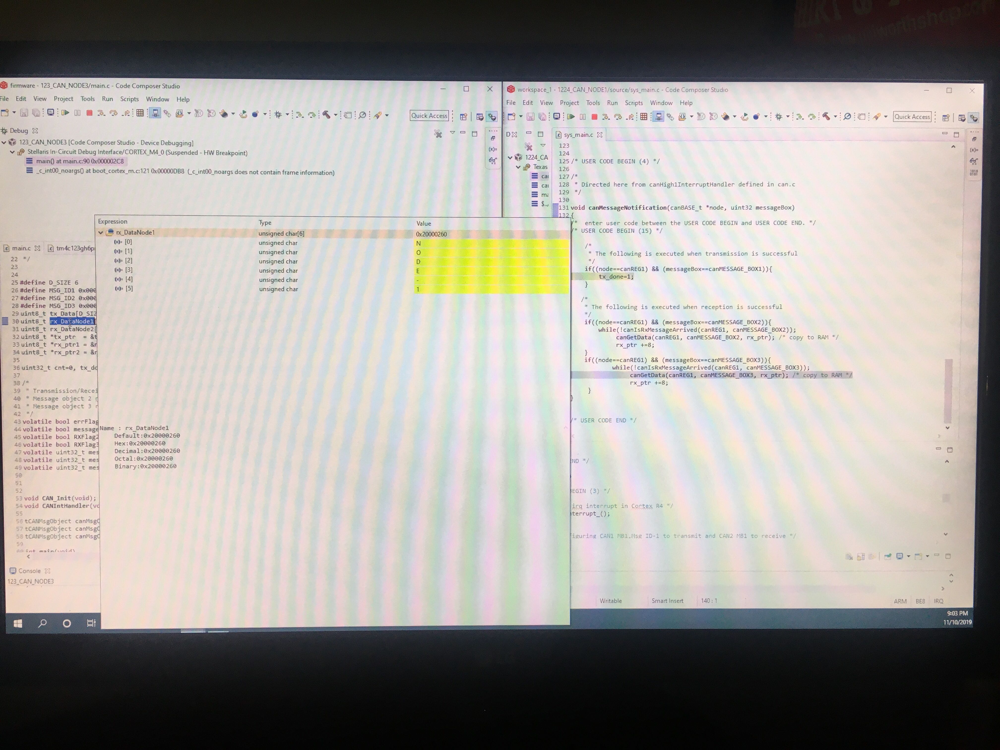

Background
A Controller Area Network (CAN) is a vehicle bus developed by Robert Bosch to allow interconnection of Electronic Circuit Units (ECU) inside a vehicle. The main reason for the development of this bus was to reduce the unnecessary weight & cost introduced by bulky wire harnessess associated with point-to-point wiring of ECUs.
CAN protocol's energetic features for safety has made it the standard in-vehicle network type and protocol known as ISO-11898. A key feature of CAN is its ability to confine a fault in the network. We will look into this features in a few minutes.

A typical CAN network
CAN bus
-
A two-wire vehicle bus standard for multiple CAN devices to communicate with each other, without a HOST computer.
-
The two wires are called CAN High (CAN_H) & CAN Low (CAN_L). They're twisted with 120-ohm resistors at ANY two ends of the CAN bus.
-
The two wires are twisted, to keep them close to each other, so that a magnetic field has an equal effect on both wires, thereby having no effect on the difference in voltage between the two wires, which results in no change in the CAN signal on the CAN bus, making CAN communication ROBUST and the most suitable type of communication protocol in such harsh environments.
-
The 120 ohm resistors are called "Termination resistors". The termination resistors return the CAN bus to idle state, preventing any echoes on the CAN bus.
-
CAN bus Signal
Comprised of two logic levels. They're called:
A Logical 0 on the CAN bus is called a Dominant bit.
A Logical 1 on the CAN bus is called a Recessive bit.
CAN follows a wired-and logic to determine what is sent on the CAN bus, a dominant bit or recessive bit.
A dominant bit on the CAN bus is represented by setting 3.5V on CAN_H & 1.5V on CAN_L. A recessive bit on the CAN bus is represented by setting 2.5V on both CAN_H & CAN_L.
Nodes
-
CAN devices on the CAN bus are called Nodes. You need atleast two nodes to setup a CAN network.
Each node on the CAN network needs the following 3 modules to work together in a CAN network.
A transceiver to convert data from TTL logic to CAN bus Logic.
A CAN controller to handle Framing & perform Cyclic-Redundancy Check on data received & transmitted.
A microcontroller to decodes the received messages and control what is to be transmitted on the CAN bus for the CAN network.
-
Key definitions & Points on CAN
Features of CAN Protocol
Multi-master
Event-driven
Message-based
Half-duplex
Asynchronous
CAN is an event-driven, message-based, multi-master, and asynchronous communication protocol.
In this project, I setup a CAN network with 3 nodes and wrote drivers for the CAN communication using interrupts to send messages from on the bus. The 3 nodes are:
TMS570LS1227 - VCU
TMS570LS1224 - BMS
TM4C123GH6PM - Dashboard
Initially, the CAN network included only the first two nodes (1 & 2). The idea was to establish communication between the two nodes, followed by addition of the third node.
The tasks carried out in this project are:
-
Used Halcogen to configure and generate driver files for CAN0 peripheral of TMS570LS1227.
-
Used Halcogen to configure and generate driver files for CAN0 peripheral of TMS570LS1224.
-
Used Code Composer to write drivers for CAN communication between the two nodes.

A CAN network with VCU & BMS.

Debugging CAN communication between VCU & BMS.

Analyzing CAN bus logic using a scope.

A CAN network with two TMS570LS1224 nodes.

A CAN network with Dashboard & BMS.

Snipbit of Dashboard receiving message "NODE-1" from BMS.